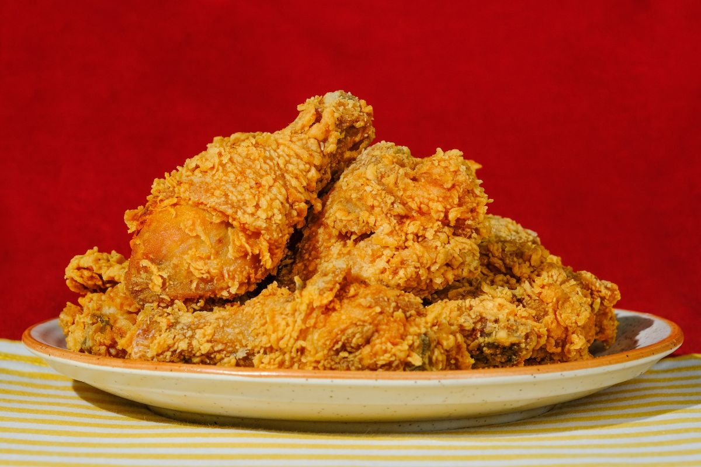

The most popular food of the Southern cuisine, fried chicken is the theme of many arguments where everyone involved seems to have a favorite, be it what their mothers used to make, a cult roadside eatery, or a bygone restaurant. However, it is universally agreed that the meat must be moist, succulent, and tender, coated with a crunchy, golden-brown crust.
Meal prep time : 30 minutes
Servings : 12